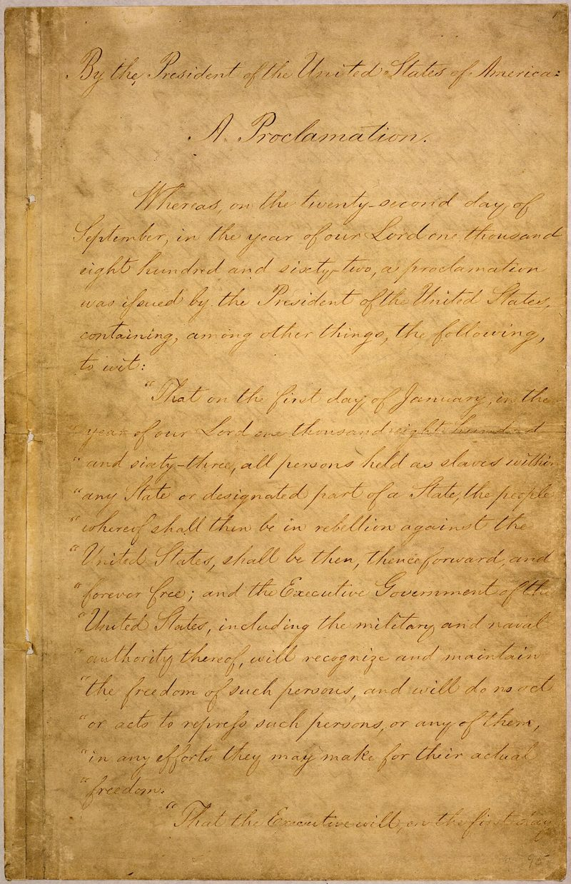
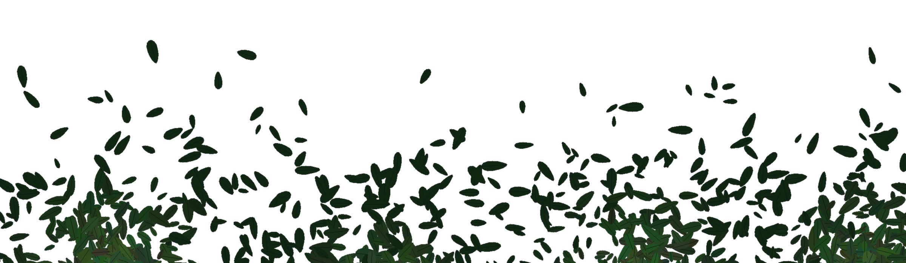
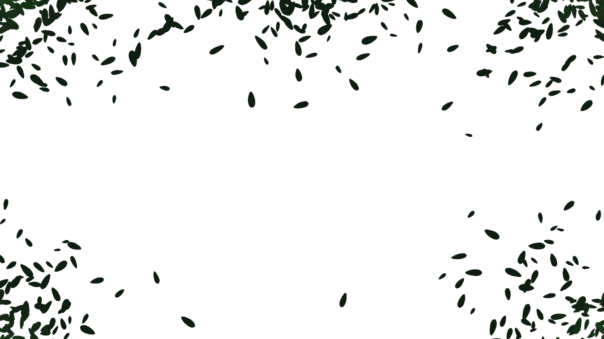

Vấn đề trọng tâm được đề cập ở văn bản Tôi có một ước mơ
là nạn phân biệt chủng tộc da màu diễn ra gay gắt tại khắp nước Mỹ thời bấy giờ.
Điều này được thể hiện qua:
Cách tác giả đề cập đến Tuyên ngôn giải phóng nô lệ
ở đoạn hai và nhấn mạnh dù đã mở ra đường lối ánh sáng cho công cuộc chống nạn phân biệt, người da đen vẫn bị áp bức đến trăm năm sau.
Nạn phân biệt chủng tộc kinh khủng thể hiện qua các bằng chứng tác giả nêu:
không thuê được phòng nghỉ ngơi trên xa lộ cao tốc hay khách sạn trên thành phố
chưa được tự do di chuyển
tấm bảng ghi:
Các luận điểm được tác giả nêu ra trong văn bản là:
Đoạn 1 (từ đầu đến công lí chiếu rọi
), sự cấp bách, không thể trì hoãn của việc đứng lên đòi lại công bằng cho người da đen trước tình cảnh hiện tại
→Bằng chứng thể hiện luận điểm 1:
Chúng ta cũng đến nơi thiêng liêng này để nhắc nhở nước Mỹ về tính cấp bách của thời khắc Ngay bây giờ không còn là lúc để l?n tránh trong sự xoa dịu xa xỉ hay trong những liều thuốc an thần rằng mọi việc sẽ từ từ thay đổi.
Cụm từ lặp lại đây là lúc
,...
Đoạn 2 (từ Và có một điều
đến hết): việc đấu tranh đòi lại nhân quyền phải được diễn ra phi bạo lực và niềm tin vào công lí.
Đừng thỏa mãn cơn khát tự do bằng những chén hận thù cay đắng
không được phép để cuộc phản kháng của chúng ta nhuốm màu bạo lực
,...
tác giả đề cao sự quan trọng của việc đấu tranh cho tự do bằng chính lí lẽ và chính trực. Không được vì hận thù mà làm mất đi ý nghĩa của cuộc đấu tranh nhân quyền thiêng liêng.
→BC: Tôi mơ rằng một ngày kia
... đến hết.
→Tác giả khẳng định niềm tin vào tương lai tươi sáng nơi những viễn cảnh tươi đẹp về ? màu da chung sống hòa thuận. Khẳng định rằng tương lai bình đẳng của xã hội Mỹ.
Lí lẽ và bằng chứng được sử dụng 1 cách chặt chẽ, logic và góp phần làm sáng tỏ luận điểm.
Người da đen sẽ vẫn bị chìm trong vũng lầy của sự bất công và đàn áp nếu không đứng lên đấu tranh ngay bây giờ. Sẽ vĩnh viễn không có bình yên nếu như người da đen chưa được công nhận quyền công dân.
Dù tổng thống Abraham Lincoln đã đứng lên đấu tranh cho quyền tự do của người da đen và kí sắc lệnh Tuyên ngôn giải phóng nô lệ
, 1 trăm năm sau, người da đen vẫn phải chịu sự đàn áp.
⇒Qua cách nêu bằng chứng, tác giả nhấn mạnh sứ mệnh thiên niên kỉ kéo dài giành lại quyền bình đẳng cho người da màu. Tác giả nêu lên sự cấp bách của việc đứng lên đấu tranh một / mới? lần nữa và khơi gợi một / mọi? cuộc cải cách toàn diện của nước Mỹ, nơi sẽ không có yên bình khi chưa có công bằng.
Người da đen phải đấu tranh với lòng tự trọng và trái tim chính trực, không có bạo lực. Người da màu không được để mầm mống? ác cảm gợi lên với toàn bộ xã hội da trắng mà phải xây dựng vững chắc mối liên hệ cộng sinh giữa hai tập thể trong xã hội.
Thực trạng đói khổ, bất công của ng da màu từ Chúng ta làm sao có thể...
đến không cảm thấy có lí do gì để bầu
.
Cảm ơn thầy cô và các bạn đã lắng nghe